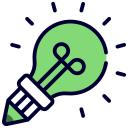
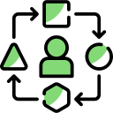
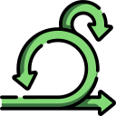
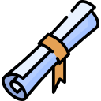

Hello, I'm <Gustavo Herrero Nunes /> Web Developer
Turning Insights into Reality
⌄
About me
A paixão por Tecnologia me move, amo desenvolver sites e sistemas online inovadores que atendam as necessidades das pessoas. Estou sempre aprendendo e me adaptando para, independente da realidade, criar soluções eficiêntes e sustentáveis.
Front-end
Páginas modernas e rápidas- HTML5 & CSS3
- Bootstrap 5
- ReactJS
Design
Interfaces intuitivas e acessíveis- Figma
- Canva
Quote
"Criatividade é ver o que outros veem e pensar o que ninguém jamais pensou." - Albert EinsteinBack-end
Sistemas eficientes e de alta performance- PHP
- Python
Quote
"Criatividade é ver o que outros veem e pensar o que ninguém jamais pensou."- Albert Einstein
What did I?
Why me?
-

Criatividade
Eu exploro novas possibilidades para desenvolver soluções aderentes à realidade de cada cliente -

Adaptabilidade
Encaro as mudanças com resiliência para adaptar minhas estratégias e objetivos -
Life Long Learning
Me atualizo constantemente com as tendências de tecnologia e melhores práticas do mercado -

Pensamento Ágil
Trabalho focado na melhoria contínua dos projetos para entrega de valor aos clientes
Soft Skills
-
Sistemas de Informação
FIAP, Bacharelado, 2022 - 2025 -
Desenvolvimento de Sistemas
FIAP, Técnico, 2019 - 2021 -

Inteligência Artificial Generativa
Alura, Certificação, 2023 -
Projetos Ágeis com SCRUM
DIO, Certificação, 2022